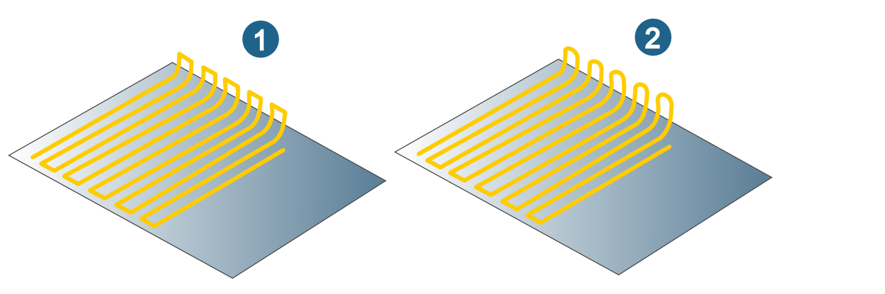
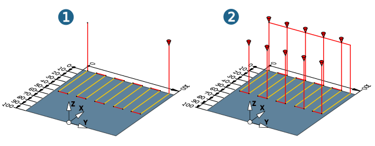

Parameters dialog page
Mode
Edit job: Delete certain sections in calculated toolpaths using a boundary and link the remaining parts of the toolpath together. All linking paths and approach and retract macros are checked for collisions.
The Edit job function is available for the following cycles:
-
3D Milling / 3D Advanced Milling: All cycles except for 3D Arbitrary Stock Roughing and 3D Form Pocket.
-
5X Cavity Milling: All cycles except for 3D Z Level Roughing and 3D Cutting Edge Machining.
Split job: Split a toolpath on the basis of the tool life in order to exchange the tool or the inserts. The toolpath is split either based on time or based on length.
The Split job function is available for the following cycles:
-
3D Milling: 3D Arbitrary Stock Roughing, 3D Optimized Roughing, 3D Profile Finishing, 3D Z Level Finishing, 3D Z Level Shape Finishing, 3D Iso Machining, 3D Plane Machining.
-
3D Advanced Milling: 3D Complete Finishing, 3D Equidistant Finishing, 3D Automatic Rest Machining, 3D Rework Machining.
-
5X Cavity Milling: 5X Optimized Rest Roughing, 5X Z Level Finishing, 5X Profile Finishing, 5X Equidistant Finishing, 5X Rest Machining, 5X Rework Machining, 5X Z level Roughing.
Conditions
Use min. dist. G0: Unnecessary rapid link movements are avoided. If they fall below the specified value, toolpaths at the defined boundary are linked with the machining feedrate. This enhances process safety and reduces machine running time.
Connect smooth: This option smoothly connects toolpaths that run close to one another.
(1) Function not enabled, (2) Function enabled.
|  |
For information on the retract mode and clearance, see sections Retract mode and Clearance.
Split job
Time: Enable this option to split the toolpath based on time. Define the Tool life (min).
Length: Enable this option to split the toolpath based on length. Define the Tool life in millimeters (inch).
|
Example: |
(1) Machining: 3D Profile Finishing cycle, X axis, Zigzag direct infeed strategy (2) Split job according to length, tool life = 51 mm, tolerance factor = 0.2 Result: Ten toolpaths |
|  |
Change tolerance factor: Define the permissible deviation of the splitting positions (lower and upper limit) based on the defined tool life. The calculated maximum and minimum tool life based on the tolerance factor are displayed under Min. / Max.. Valid values for the tolerance factor are between 0 and 1.
|
Example: |
Tool life = 3500 minutes. Tolerance factor = 0.2. Min. tool life = 2800 minutes, max. tool life = 4200 minutes |
Change mode: Define the reason for splitting the toolpath. Select Change inserts to keep the current tool and exchange the inserts. Use Inc. tool numbers to exchange the tool based on the defined Tool number increment. Select Fixed tool numbers to exchange the tool based on the defined Tool number list.
Split mode: Select the method for splitting the toolpath. Select Rapid move to split the toolpath before a rapid movement. Select End of path to split the toolpath at the end of a machining step (for example, at the end of a line in a zigzag pattern).
Note
If the parameters used (tool life, tolerance factor) allow the job to be split, hyperMILL will generate an appropriate number of toolpath files. These split machining jobs are displayed in the hyperVIEW browser.